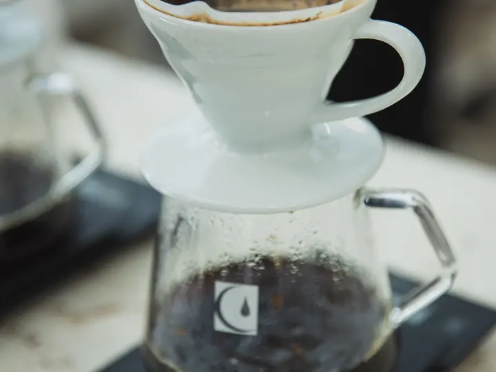
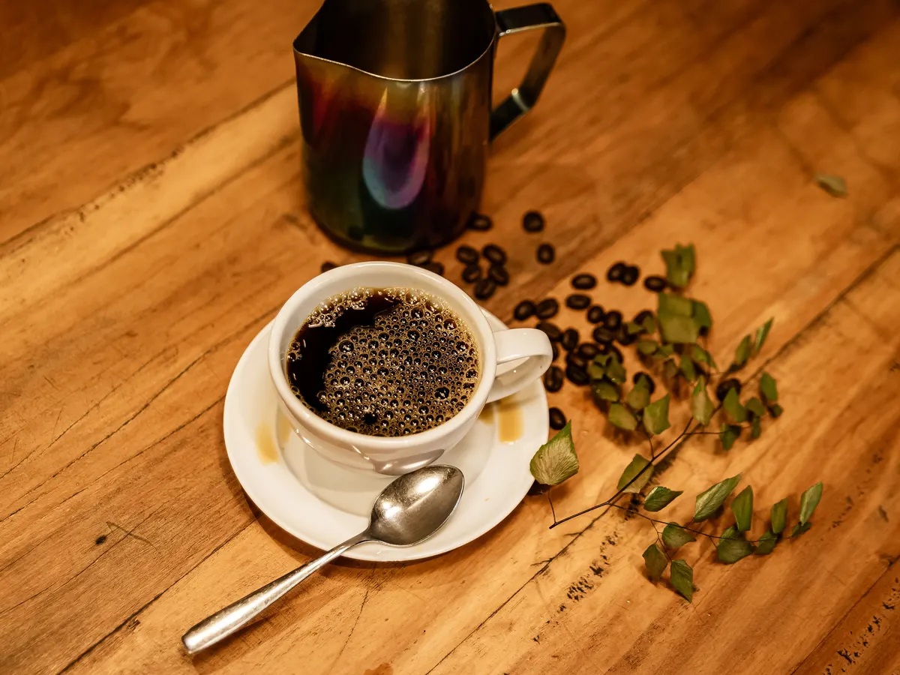
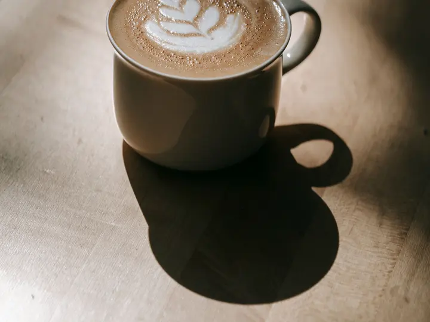
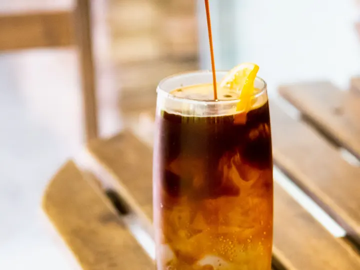
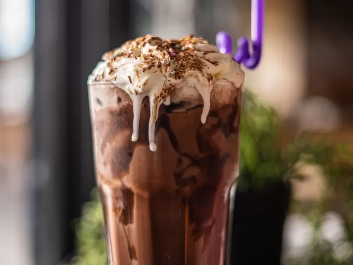
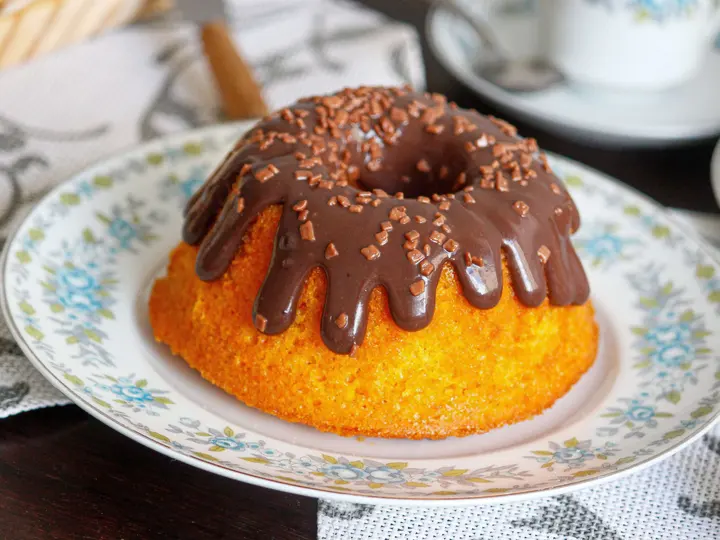
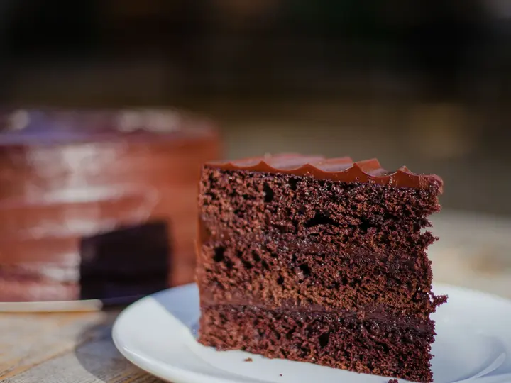
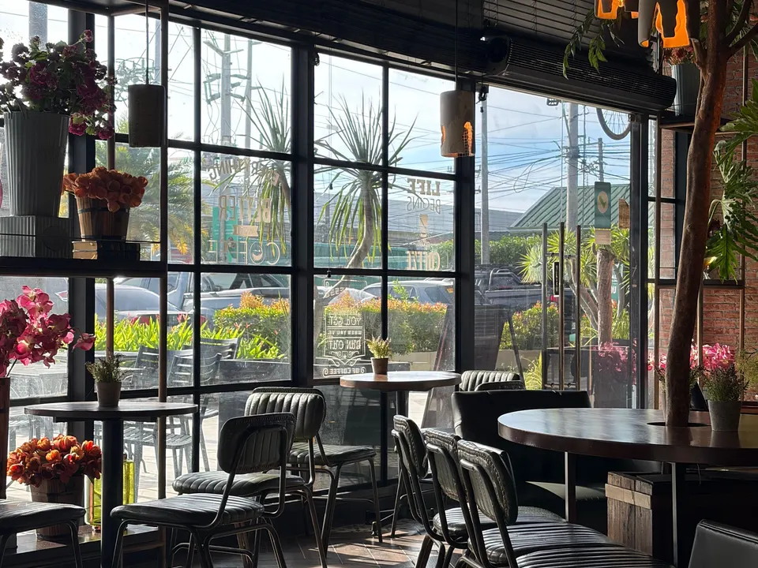

Café coado
R$ 8,00
Cafés
Grãos de torra média preparados na hora, com sabor equilibrado.
Uma pausa acolhedora no seu dia
Bem-vindo ao Café Aurora, um espaço fictício criado para celebrar sabores simples, conversas tranquilas e manhãs especiais.
Conheça o cardápio
Sabores fictícios pensados para diferentes momentos do seu dia. Valores meramente ilustrativos.

R$ 8,00
Cafés
Grãos de torra média preparados na hora, com sabor equilibrado.

R$ 14,00
Cafés
Espresso, leite cremoso, cacau e um toque suave de canela.

R$ 16,00
Gelados
Café extraído a frio com laranja e água com gás.

R$ 15,00
Gelados
Bebida cremosa de cacau com leite e gelo.

R$ 12,00
Sobremesas
Fatia de bolo macio com cobertura delicada de chocolate.

R$ 14,00
Sobremesas
Fatia de torta cremosa com base crocante e cacau.
O Café Aurora é uma cafeteria fictícia criada como projeto de portfólio. A proposta é apresentar uma experiência simples, acolhedora e fácil de usar, construída com tecnologias da web.

Este é um contato demonstrativo para a apresentação do projeto.
Rua do Amanhecer, 100 — Centro